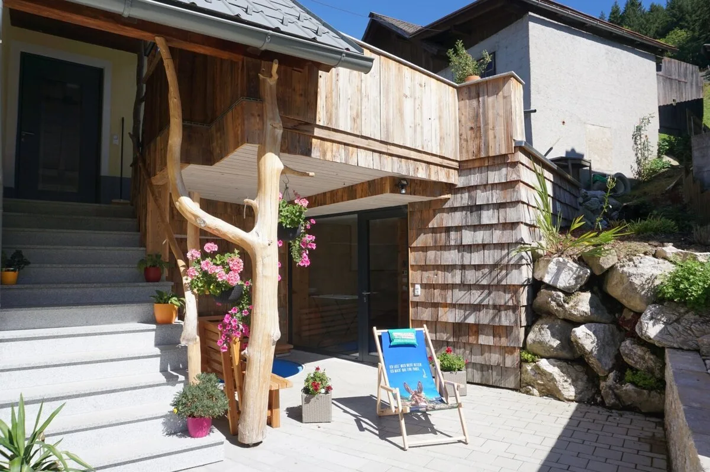

70 m² · až 5 osob
70 m² · až 5 osobApartmán LöckerseeS možností přiobjednat selskou světnici
- 1–5 osob
- 70 m²
od 180 €za noc pro 4 osoby, plus závěrečný úklid 75 € a místní poplatek
ZobrazitAlmromantik › Schmiedsipplhof
Dovolená na farmě · Gosau
Rekreační farma v údolí Mittertal v Gosau s výhledem na Gosaukamm, zvířaty, saunou z limbového dřeva a místem pro celou rodinu.
Naše apartmány
70 m² · až 5 osobod 180 €za noc pro 4 osoby, plus závěrečný úklid 75 € a místní poplatek
Zobrazit 80 m² · až 5 osob
80 m² · až 5 osobod 190 €za noc pro 4 osoby, plus závěrečný úklid 85 € a místní poplatek
Zobrazit 200 m² · až 15 osob
200 m² · až 15 osobod 260 €za noc pro 5 osob, plus závěrečný úklid až 200 € podle počtu obsazených pokojů a místní poplatek
ZobrazitV ceně
Saunu jsme si postavili sami z limbového dřeva. Hned vedle je krytá odpočívárna s dřevěnými lavicemi a Kneippova lázeň na ochlazení, venku terasa s lehátky a výhledem na Gosaukamm. Stačí ji zapnout a užívat si – pro naše hosty bez příplatku.



Život na farmě
5 pinzgauských krav s mláďaty, kobyla Bella, oslice Emma a Marie, mini shetlandští poníci, valašské černonosé ovce, indičtí běžci, kočky a farmářský pes Sky. Hladit a krmit je nejlépe půjdete s námi, stačí nám dát vědět.
5 pinzgauských krav s mláďaty
Od roku 2015 chováme krávy bez tržní produkce mléka: našich pět pinzgauských krav si samo vychovává telata. V létě tráví čas na horské pastvině, kousek od naší chaty. Kdo tam tráví dovolenou, má je za sousedy.


Naše kobyla plemene Paint Horse
Bella je naše kobyla plemene Paint Horse, poznáte ji podle bílého pramene v hřívě. Se svým hříbětem je miláčkem mnoha hostů.


S přírůstkem
Emma a Marie jsou tajné hvězdy farmy. Rády se nechají pohladit a nedávno se jim narodilo mládě.


Mini shetlandští poníci
Malí, chlupatí a zvědaví: naši mini shetlandští poníci jsou ideální pro nejmenší hosty.

Valašské černonosé ovce
Se svými černými tvářemi a hustou vlnou vypadají jako plyšáci.


Farmářský pes, indičtí běžci a kočky
Sky, náš farmářský pes, vítá každého hosta. K tomu naši indičtí běžci u kašny a farmářské kočky.


Lze přiobjednat k Löckersee a Hehnanest
Kachlová kamna, velký dřevěný stůl, malované skříně: v naší selské světnici oslavíte narozeniny, rodinná setkání nebo prostě dlouhý večer. Lze rezervovat spolu s apartmánem Löckersee nebo Hehnanest.
€ 80 za pobyt


Vaši hostitelé
Žijeme v Gosau a statek Schmiedsipplhof je v naší rodině po generace. Heike je vaší hostitelkou na statku i na horách, Martin jako truhlářský mistr všechna naše ubytování sám naplánoval, postavil a zařídil. Těšíme se na vás.


Certifikovaný člen sdružení Urlaub am Bauernhof se 4 květinami. V letech 2024 a 2025 oceněn 5 z 5 bodů.
Co říkají naši hosté
Skutečná hodnocení hostů přes Urlaub am Bauernhof (TrustYou), stav k říjnu 2026. Zobrazit všechna hodnocení
„Cítili jsme se u vás v Gosau naprosto skvěle […] Moc pěkný apartmán se spoustou místa […]“
„Nádherný pobyt v apartmánu Almheu s našimi třemi dětmi a psem […] Fantastické místo pro rodinnou dovolenou, moc rádi se vrátíme.“
„Klidná farma s nádherným výhledem na hory. Skvěle vybaveno, pokud si chcete vařit sami. Velmi čisté, velmi milá hostitelka. Skvělá sauna.“
Ano. Domácího mazlíčka prosím nahlaste při rezervaci, poplatek je 8 € za zvíře a noc. Do ložnic a na postele zvířata nesmějí. Pokud prokážeme, že tam vaše zvíře bylo, účtujeme mimořádný úklid 100 €. Nenechávejte ho prosím dělat potřebu na loukách, sušíme z nich seno pro naše zvířata.
Ano. Sauna z limbového dřeva s Kneippovou lázní je pro naše hosty bez příplatku.
Dívat se a fotit můžete kdykoli, ale jen zvenčí: prosím nevstupujte do stáje ani na pastvinu, naše krávy chrání svá telata. Pokud je chcete hladit a krmit, dejte nám vědět a půjdeme spolu – poznáte je všechny jménem.
K lanovce Hornspitz v lyžařské oblasti Dachstein West dojdete za 7 až 10 minut. Běžecká trať začíná přímo před farmou.
Ano. Máme vlastní šťávy, ovocné pomazánky a bylinky. Při příjezdu se jen zeptejte, co je zrovna k dispozici.
Prosíme ne. Louky sečeme dvakrát ročně a děláme z nich seno, ze kterého naše zvířata žijí v zimě. Na hraní je tu dětské hřiště, zahrada a travnatá plocha, rádi vám vše ukážeme.
Ano, gril je vám k dispozici. Popelnice najdete vpravo od domu, prosíme o třídění odpadu, je tu i nádoba na bioodpad.
Ano. Od 3 nocí dostanete SalzkammergutCard zdarma, se slevou až 25 % na lanovky, jeskyně, lodní dopravu, muzea a další. Podklady jsou k dispozici u nás na statku.
Místní poplatek obce Gosau a případně závěrečný úklid. Přesnou celkovou cenu uvidíte v online rezervaci ještě před potvrzením.
Volné termíny, výpočet ceny a okamžitá závazná rezervace. Bez poptávky, bez čekání.
Online rezervaci právě zprovozňujeme. Do té doby rezervujte telefonicky nebo e-mailem.
Dotazy? Tel. +43 664 11 44 926
info@almromantik.at